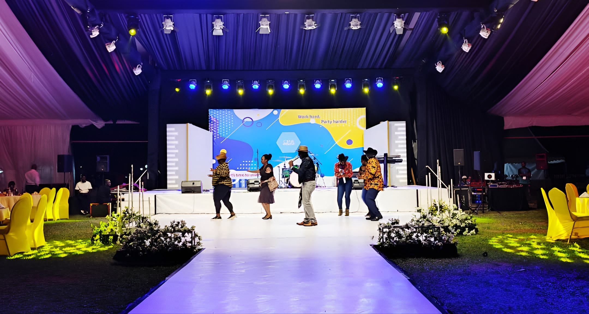
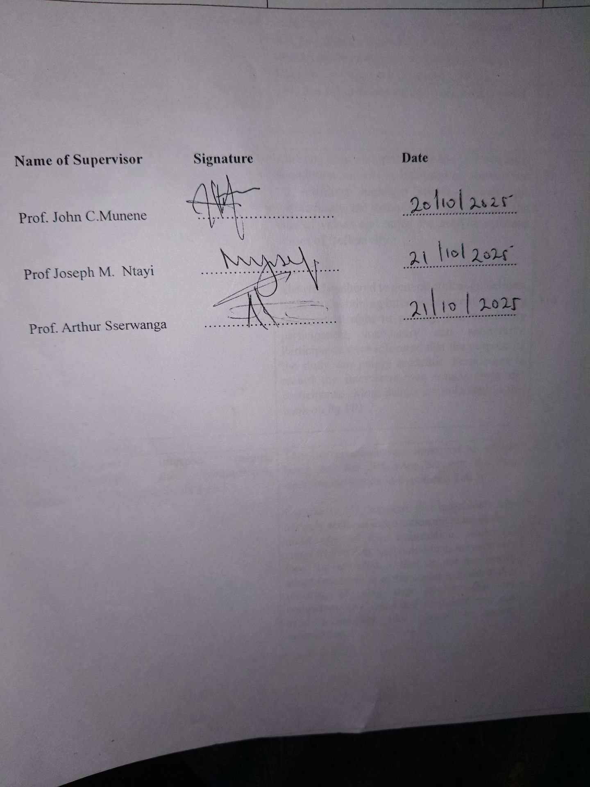
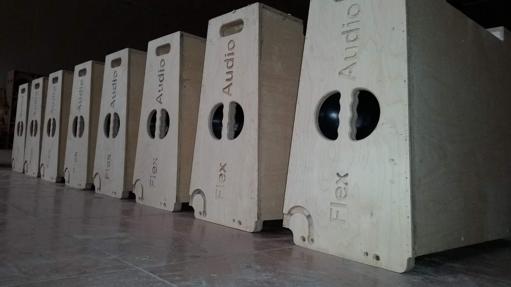

Community Wi‑Fi
Set up a shared Wi‑Fi hotspot in a community center or library so students can access online learning.

Repair & Maker Workshops
Host weekend workshops that teach basic electronics repair, 3D printing, or coding for beginners.

Solar Street Lights
Partner with local authorities to install solar-powered lights that improve safety and reduce energy costs.
Low‑cost Water Sensors
Build simple sensors to monitor water quality in schools or rivers.
Plastic Recycling Drive
Collect and shred plastic to feed into local maker projects and reduce waste.
Open Data Map
Create a map of community assets like clinics, Wi‑Fi spots and bus routes to guide planners.
Getting started
- Pick a small problem you care about.
- Talk to the people affected and understand needs.
- Prototype a simple solution, then test and improve.
- Measure impact and share results openly.
Useful links
Getting started
- Pick a small problem you care about.
- Talk to the people affected and understand needs.
- Prototype a simple solution, then test and improve.
- Measure impact and share results openly.
- Pick a small problem you care about.
- Talk to the people affected and understand needs.
- Prototype a simple solution, then test and improve.
- Measure impact and share results openly.
Getting started
Useful links
Useful links
These are beginner-friendly ideas. Start small, measure impact and grow over time.